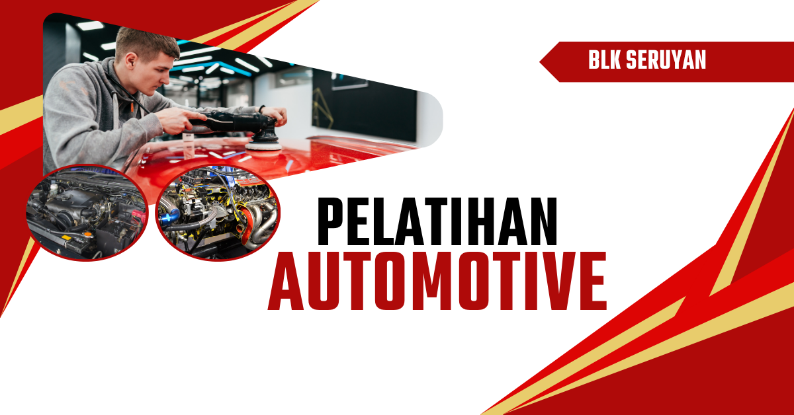
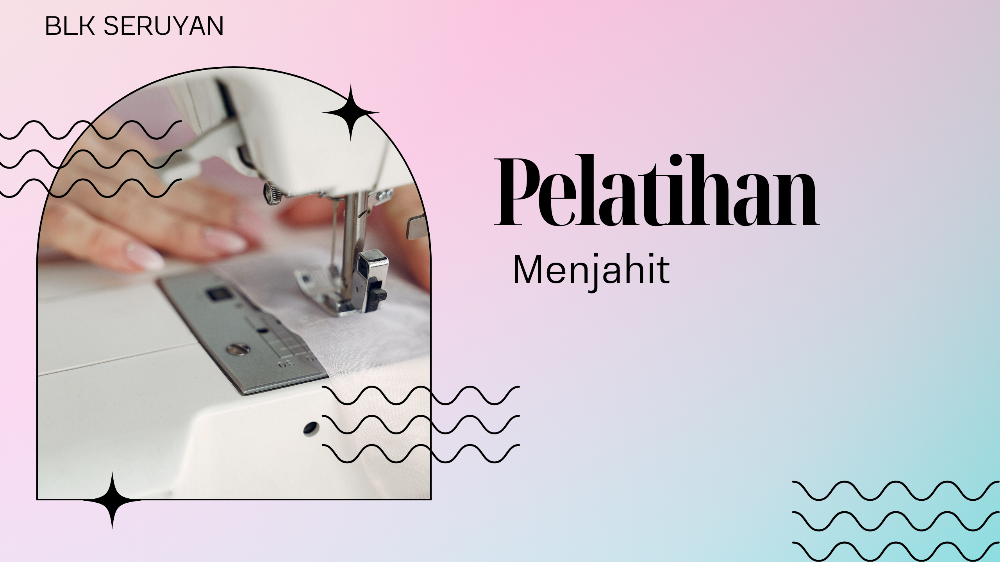
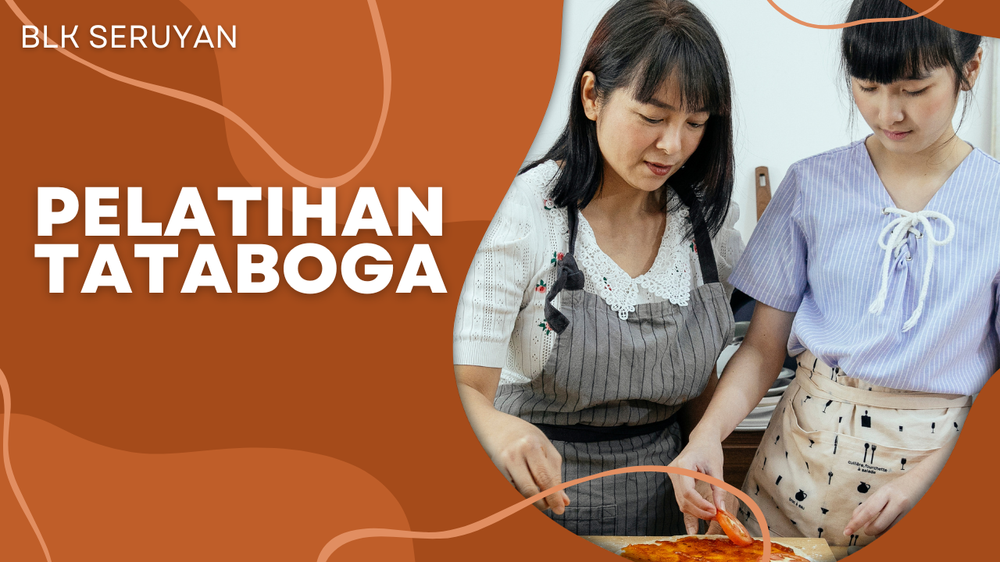

Program Kejuruan Bersertifikasi Nasional
Daftar keahlian taktis yang dirancang khusus menyesuaikan penyerapan bursa kerja nasional
Teknik Informatika Komputer
Menguasai rekayasa topologi jaringan lokal, penanganan keamanan siber, konfigurasi server Linux, serta manajemen perangkat keras komputer skala perkantoran.
Daftar Kejuruan Ini →
Teknik Mekanik Otomotif
Pendalaman menyeluruh sistem pembongkaran mesin kendaraan roda dua, pemecahan masalah sistem kelistrikan injeksi komputerisasi, serta manajemen perawatan komponen transmisi matik.
Daftar Kejuruan Ini →
Instalasi Otomasi Listrik
Keahlian merancang sirkuit listrik bangunan gedung bertingkat, penanganan panel pembagian daya tegangan tinggi, serta penguasaan PLC mesin pabrik industri.
Daftar Kejuruan Ini →
Menjahit Pakaian Dengan Mesin
Pelatihan Menjahit Pakaian Dengan Mesin di Balai Latihan Kerja Seruyan memberikan keterampilan praktis kepada peserta dalam bidang tata busana dan teknik menjahit modern menggunakan mesin jahit. Pelatihan ini cocok bagi peserta yang ingin bekerja di industri garmen, butik, konveksi, maupun membuka usaha jahit mandiri.
Daftar Kejuruan Ini →
Pengolahan Hasil Perikanan
Pelatihan Pengolahan Hasil Perikanan di Balai Latihan Kerja Seruyan dirancang untuk membekali peserta dengan keterampilan dalam mengolah hasil perikanan menjadi produk yang bernilai jual tinggi, higienis, dan berkualitas. Peserta akan mempelajari teknik dasar hingga lanjutan dalam pengolahan ikan, mulai dari proses pemilihan bahan baku, pembersihan, pengawetan, hingga pengemasan produk.
Daftar Kejuruan Ini →